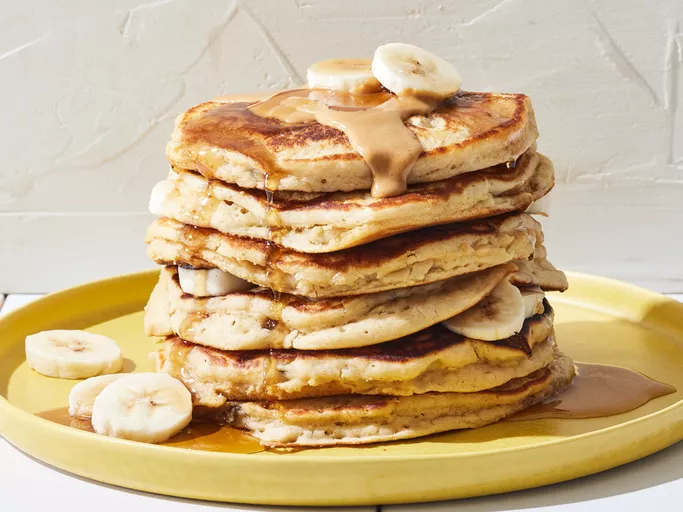

Welcome to our simple recipe collection, where delicious meals are made easy. Discover quick and tasty recipes such as vegetable fried rice, creamy garlic pasta, and banana pancakes, all prepared with simple ingredients and easy-to-follow steps. Whether you are cooking breakfast, lunch, or dinner, these recipes will help you create satisfying homemade meals with confidence.